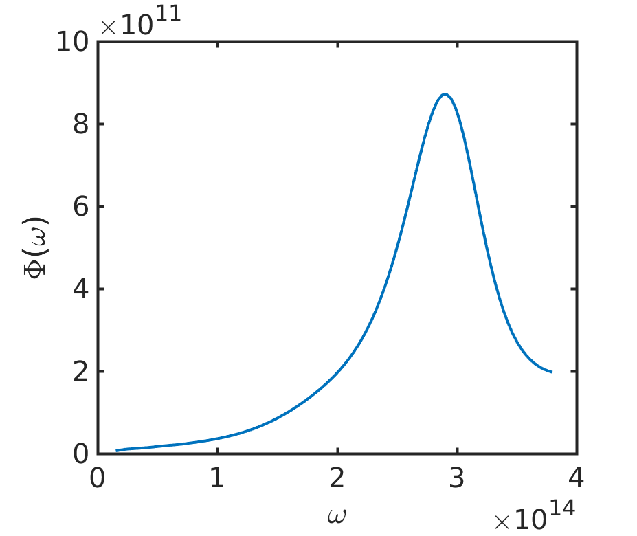
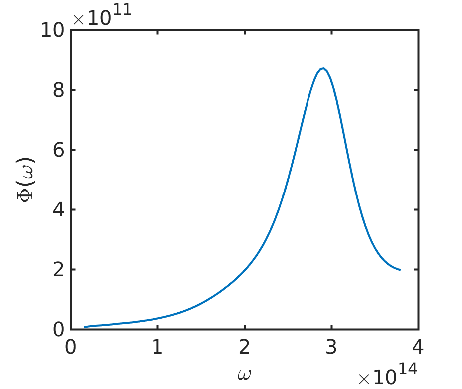

Contained Patterns Near-field
The following example creates two contained circle patterns in the layer of SiBottom, resulting in a cylindrical shell made of vacuum.
s = SimulationPattern.new(); s:SetLattice(1e-7, 1e-7, 90); s:SetNumOfG(250); --s:OptSetLatticeTruncation("Parallelogramic") s:AddMaterial("Si", "Si.txt"); s:AddMaterial("Vacuum", "Vacuum.txt"); s:AddLayer("SiBottom", 0, "Si"); s:SetLayerPatternCircle("SiBottom", "Vacuum", {50e-9, 50e-9}, 45e-9) s:SetLayerPatternCircle("SiBottom", "Si", {50e-9, 50e-9}, 30e-9) s:AddLayer("VacGap", 1e-7, "Vacuum"); s:AddLayer("SiTop", 0, "Si"); s:SetSourceLayer("SiBottom"); s:SetProbeLayer("VacGap"); s:OptPrintIntermediate(); s:SetKxIntegralSym(100); s:SetKyIntegralSym(100); s:InitSimulation(); s:OutputSysInfo(); s:IntegrateKxKy();
The output from the function GetLayerPatternRealization results in the following figure
 The resulting is

The resulting is
